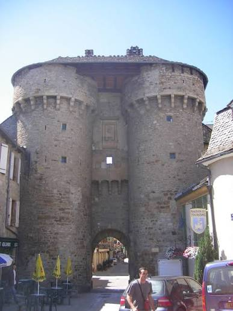
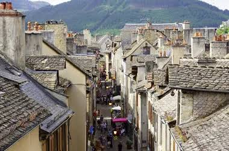

Ville close vivant longtemps repliée derrière ses murailles, Marvejols occupe une position stratégique au carrefour de l'Aubrac, de la Margeride et des Gorges du Tarn. Son destin bascule au XVIe siècle : en 1586, en pleine guerre de Religion, la ville est incendiée par les troupes de l'amiral de Joyeuse. Sa reconstruction, financée par le soutien du roi Henri IV, vaut à Marvejols le titre de « ville royale » et fait du bon roi une figure durablement chérie par ses habitants.

La porte de Soubeyran, vestige des remparts médiévaux et musée archéologique
Devenue capitale du Gévaudan sous Henri IV, Marvejols conserve de cette époque trois portes fortifiées qui furent, au Moyen Âge, l'unique moyen d'entrer dans la cité : la porte de Soubeyran au nord, inscrite Monument historique depuis 1925 et abritant aujourd'hui un musée archéologique, la porte de Chanelles au sud, et la porte du Théron à l'est. Chacune était autrefois défendue par un pont-levis franchissant le fossé qui encerclait le bourg.
Le XVIIIe siècle marque durablement la mémoire de la ville : c'est à Marvejols que se réunissent, le 24 mars 1766, les États particuliers du Gévaudan pour organiser la traque de la tristement célèbre Bête. Au XIXe siècle, la cité connaît l'âge d'or de son industrie lainière, dont témoignent encore aujourd'hui d'anciennes fabriques et manufactures reconverties, avant de devenir la sous-préfecture animée qu'elle est aujourd'hui, entre patrimoine médiéval et art de vivre gévaudanais.
🏰
Visite pratique

Le centre historique et ses maisons à pans de bois
⏱️
Durée
Environ 1h30 de visite du centre historique
📊
Difficulté
Facile, ville close de plan resserré
🚗
Accès
Carrefour Aubrac-Margeride-Gorges du Tarn, à 670 m d'altitude
🎟️
Tarif
Ville en accès libre, musée de la porte de Soubeyran payant
✦ Infos pratiques
Porte de Soubeyran Porte fortifiée du XIVe siècle, classée MH en 1925, abritant le musée archéologique de la ville
Statue de la Bête du Gévaudan Œuvre en bronze d'Emmanuel Auricoste (1958), place des Cordeliers
Porte de Chanelles Ancienne porte sud, autrefois dite « porte de l'Hôpital »
Porte du Théron Ancienne porte est des remparts médiévaux
Musée des Deux Alberts Installé dans l'ancienne chapelle de l'hôpital, dédié à l'imprimerie et à l'industrie lainière locale
Parc des Loups du Gévaudan À quelques minutes du centre, parc animalier dédié à la préservation des loups
Vieux quartiers Maisons à pans de bois et façades des XVIe-XVIIe siècles autour de la place des Cordeliers
Marché Tous les samedis matin, animé et réputé dans tout le Gévaudan
1
La porte de Soubeyran
Considérée par beaucoup comme la plus belle des trois portes, cette tour du XIVe siècle classée Monument historique en 1925 abrite un musée archéologique retraçant l'histoire de la région.
2
La statue de la Bête du Gévaudan
Sculptée en bronze par Emmanuel Auricoste en 1958, elle accueille les visiteurs place des Cordeliers et rappelle la légende qui a rendu Marvejols célèbre dans toute la France.
3
Les remparts et les portes de Chanelles et du Théron
Vestiges de l'enceinte fortifiée qui protégeait autrefois la ville close, dessinant encore aujourd'hui le plan du centre historique.
4
Le musée des Deux Alberts
Installé dans une ancienne chapelle néo-gothique, il retrace l'histoire de l'imprimerie familiale et des manufactures lainières qui ont fait la prospérité de la ville.
5
Le Parc des Loups du Gévaudan
À deux pas du centre-ville, ce parc animalier voué à la préservation des loups prolonge, sous un jour bienveillant, la légende locale de la Bête.
🏆
Reconnaissance & patrimoine
🏅
Porte de Soubeyran, Monument historique
Classée au titre des Monuments historiques depuis 1925, elle est l'un des rares vestiges aussi bien conservés des trois portes fortifiées de la ville.
MH depuis 1925
👑
Ville royale du Gévaudan
Reconstruite avec le soutien financier d'Henri IV après l'incendie de 1586, Marvejols porte encore le titre de capitale du Gévaudan sous son règne.
Cité royale
🐺
Capitale de la légende de la Bête du Gévaudan
C'est à Marvejols que se sont réunis, en 1766, les États particuliers du Gévaudan pour organiser la traque de la Bête, dont la statue orne aujourd'hui la ville.
1764-1767
🧶
Héritage de l'industrie lainière
Les nombreuses usines et fabriques héritées de l'âge d'or textile du XIXe siècle témoignent d'un riche passé industriel régional.
Patrimoine industriel
🐺
La Bête du Gévaudan, la terreur du XVIIIe siècle
Entre 1764 et 1767, une « bête féroce » sème la terreur dans les campagnes du Gévaudan, s'en prenant principalement aux femmes et aux enfants. Décrite comme un animal à la taille d'un veau, au poil roux et à la mâchoire redoutable, elle défie toutes les tentatives de capture et fait une centaine de victimes en trois ans, dans un contexte de traditions orales et d'isolement hivernal qui favorise la propagation des rumeurs les plus folles.
La bête qui m'a attaqué ressemble à un gros loup, mais ce n'en est pas un !
— Témoignage rapporté d'une première victime
En septembre 1765, François Antoine, porte-arquebuse de Louis XV, abat un loup de grande taille présenté comme la Bête ; les attaques reprennent pourtant quelques mois plus tard. Ce n'est qu'en juin 1767 qu'un paysan nommé Jean Chastel abat un second animal, mettant un terme définitif aux massacres. L'identité réelle de la créature reste débattue encore aujourd'hui, nourrissant une légende devenue mythe national, portée par la statue de bronze d'Auricoste qui veille désormais sur la place des Cordeliers.
💬
Le saviez-vous ? Anecdotes
👑
Le « bon roi » Henri IV
Après l'incendie de 1586, Henri IV finança la reconstruction de la ville, lui valant le titre de ville royale et une reconnaissance durable dans le cœur des Marvejolais.
🎨
Une Bête sculptée en 1958
La statue en bronze de la Bête du Gévaudan, œuvre d'Emmanuel Auricoste, est hérissée de plaques saillantes évoquant une créature à mi-chemin entre le loup et le monstre légendaire.
🏛️
Les États du Gévaudan réunis à Marvejols
Le 24 mars 1766, les représentants locaux se rassemblent dans la ville pour organiser la grande battue destinée à mettre fin aux attaques de la Bête.
🧵
Une capitale de la laine
Au XIXe siècle, les fabriques et manufactures lainières de Marvejols employaient une grande partie de la population, avant le déclin progressif de l'industrie textile régionale.
📍
Aux alentours
Mende Cité épiscopale et préfecture de la Lozère, à une vingtaine de minutes.
Parc des Loups du Gévaudan Parc animalier voué à la préservation des loups, à quelques kilomètres du centre-ville.
L'Aubrac Plateaux volcaniques et burons traditionnels, aux portes nord de la ville.
Gorges du Tarn Canyon spectaculaire accessible en une demi-heure environ.
Causse de Sauveterre Vastes étendues calcaires ponctuées de fermes caussenardes traditionnelles.
Chirac Village voisin niché dans la vallée du Lot.